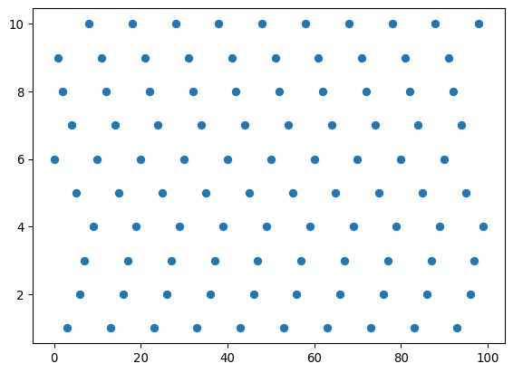
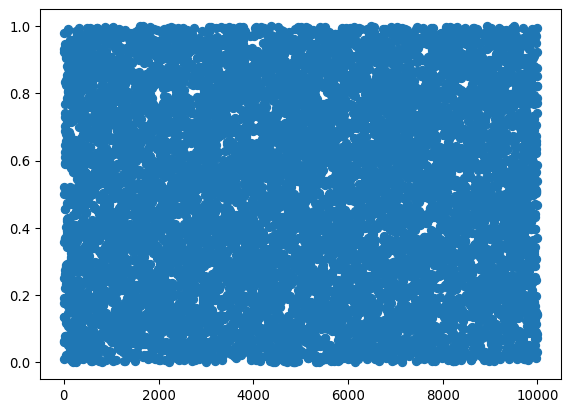
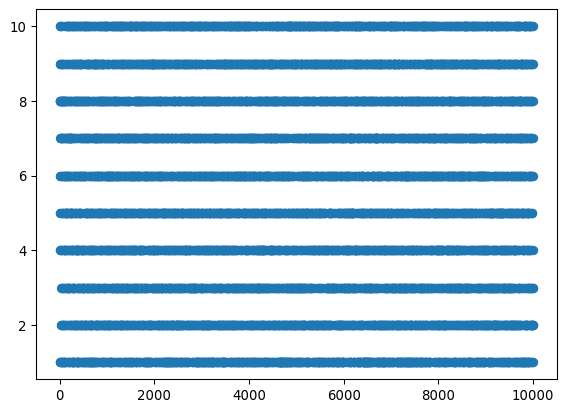
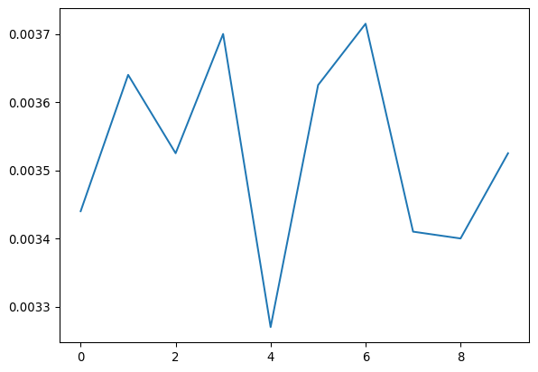

import matplotlib.pyplot as plt
import numpy as npDefiniciones básicas de probabilidad
Introducción a la probabilidad
Definición
Matemáticamente la probabilidad es la asignación de una medida a un conjunto \(\mathcal{S}\). Es decir, a cada subconjunto \(E\) del conjunto le asignamos un número \(p(E)\) tal que
- \(p(E) \geq 0\) para todo \(E\).
- \(p(A \cup B) = p(A) + p(B)\)
- \(p(\mathcal{S}) = 1\)
Cuando el conjunto \(\mathcal{S}\) es discreto, le asignamos a cada elemento un número entre \(0\) y \(1\) tal que la suma de todos los elementos sea \(1\).
Cuando el conjunto \(\mathcal{S}\) es un subconjunto continuo de los reales, le asignamos una densidad de probabilidad tal que la probabilidad del intervalo \((a,b) \subset \mathcal{S}\) es \[ p((a,b)) = \int_a^b dx\,\rho(x)\,. \] La función de distribución de probabilidad a veces se llama la PDF por su sigla en inglés.
Más allá de la definición matemática, uno puede preguntarse por el significado de la probabilidad. Esta pregunta también es práctica, porque nos gustaría saber cómo asignarle una probabilidad a cada evento. Hay dos interpretaciones
- Objetiva: La probabilidad es obtenida experimentalmente. Si realizamos un experimento un número \(N\) de veces y obtenemos el resultado \(A\) un número \(N_A\) veces, decimos que la probabilidad de obtener \(A\) es \[ P(A) = \lim_{N\rightarrow \infty} \frac{N_A}{N}\,. \] Esta definición es idealizada ya que nunca podemos realizar un experimento infinitas veces.
- Subjetiva: Las probabilidades nos dan una estima basada en la incertidumbre debida a la ignorancia sobre los procesos.
Normalmente asumimos, a falta de más información, que todos los resultados son igualmente probables. Si hacemos esto la probabilidad es la fracción de eventos favorables.
Propiedades básicas
Definimos primero la probabilidad condicional de que ocurra \(A\) dado que ocurre \(B\): \(P(A|B)\)
Ejemplo: La probabilidad de que al lanzar un dado dos veces el segundo resultado sea par dado que la suma de ambos es 6.
Lanzar dos dados tiene 36 posibles resultados. La probabilidad la tomamos como la fracción que cumple lo pedido.
Entre los 36 resultados, tomemos aquellos que cumplen B (la suma de ambos resultados es 6):
\[ 1, 5\,;\quad 2, 4\,;\quad 3, 3\,;\quad 4, 2\,;\quad 5, 1\,. \]
La probabilidad condicional es la fracción de estos 5 que cumple la condición A (el segundo es par). Estos son 2. Por lo tanto la probabilidad es \(2/5\).
La probabilidad conjunta es la probabilidad de que ocurran dos eventos.
En el ejemplo anterior, la probabilidad de que el segundo resultado sea par y la suma de ambos sea 6 es la fracción del total que cumple estas dos condiciones. Es decir \(2/36\).
En general tenemos que
\[ P(AB) = P(A|B)P(B) \]
Podemos verificar que se cumple para el ejemplo anterior.
Esto tiene sentido ya que \(P(B)\) es la fracción que cumple B, y \(P(A|B)\) es la fracción entre todos los que cumplen B de aquellos que cumplen A.
Otro problema, ¿cuál es la probabilidad de que la suma sea 6 o que el segundo resultado sea par?
Si lo pensamos un segundo
\[ P(A\cup B) = P(A) + P(B) - P(AB) \]
Esto es porque al sumar los que cumplen A y los que cumplen B, estamos contando dos veces los que cumplen ambos.
Decimos que dos eventos son independientes cuando \(P(A|B) = P(A)\). En ese caso \(P(AB) = P(A)P(B)\).
Decimos que dos eventos son mutuamente excluyentes cuando \(P(AB) = 0\). En ese caso \(P(A\cup B) = P(A) + P(B)\).
Teorema de Bayes
Este teorema es tal vez el teorema famoso más sencillo de demostrar:
\[ P(A|B) = \frac{P(B|A) P(A)}{P(B)} \]
Demostración:
\[ P(AB) = P(BA) \]
entonces
\[ P(A|B)P(B) = P(B|A)P(A) \]
Para ver un ejemplo de su poder, supongamos que sabemos que los estudiantes de física son \(70\) hombres y \(30\) mujeres mientras que los estudiantes de química son \(141\) hombres y \(153\) mujeres. En el pasillo conocemos a un estudiante que está hablando de átomos (tal que es de física o química). Si este estudiante es mujer, ¿cuál es la probabilidad de que sea de física?
Queremos calcular \(P(física|mujer)\), pero conocemos el objeto al revés \(P(mujer|física)\). ¿Cómo lo hacemos?
numero_estudiantes = 141 + 153 + 70 + 30
prob_mujer = (153 + 30)/numero_estudiantes
prob_fisica = 100/numero_estudiantes
prob_mujer_dado_fisica = 30/100
prob_mujer_dado_fisica*prob_fisica/prob_mujer0.16393442622950818Una variable aleatoria
Un número \(x\) que puede tomar valores dentro del conjunto \(\mathcal{S}\) se llama una variable aleatoria. En física es más común usar variables aleatorias continuas, es decir \(\mathcal{S} = \mathbb{R}\). Podemos caracterizar esta variable con varias propiedades:
- La función cumulativa de probabilidad es \(P(x) = p((-\infty, x))\). Claramente \(P(-\infty) = 0\) y \(P(\infty) = 1\). Note que \(\frac{d P}{dx}(x) = \rho(x)\).
- El valor esperado de alguna cantidad \(F(x)\) es \[ \langle F \rangle = \int_{-\infty}^{\infty}dx\,\rho(x)F(x)\,. \]
- Podemos cambiar de variable definiendo \(y(x)\). La distribución de probabilidad de esta variable es \[ \rho(y) = \left|\frac{\partial x}{\partial y}\right|\rho(x)\,. \]
Ejemplo: Sea \(\rho(x) = \lambda \exp(-\lambda|x|)/2\). Note que \(\int_{-\infty}^\infty dx\,\rho(x) = 1\). Tomemos \(y = x^2\), entonces también \(\left|\frac{\partial x}{\partial y}\right| = \frac{1}{2\sqrt{y}}\).
Como hay dos valores de \(x\) que corresponden al mismo valor de \(y\), la probabilidad de \(y\) será la suma de esas dos posibilidades: \[ \rho(y) = 2\frac{\lambda}{2}\exp(-\lambda\sqrt{y})\frac{1}{2\sqrt{y}} = \frac{\lambda \exp(-\lambda \sqrt{y})}{2\sqrt{y}}\,. \]
Momentos y cumulantes
Una propiedad importante de una distribución de probabilidad son sus momentos \[ m_n = \langle x^n \rangle = \int dx\,\rho(x)x^n\,. \]
La función característica es la transformada de Fourier de la densidad de probabilidad \[ \tilde{\rho}(k) = \langle e^{-ikx} \rangle = \int dx\,\rho(x) e^{-ikx}\,. \] La PDF se puede recuperar a partir de la función característica tomando la transformada inversa \[ \rho(x) = \frac{1}{2\pi}\int_{-\infty}^\infty dk\,\rho(k) e^{ikx}\,. \] Los momentos de la distribución se pueden obtener expandiendo en potencias de \(k\) \[ \tilde{\rho}(k) = \left\langle \sum_{n=0}^\infty \frac{(-ik)^n}{n!}x^n\right\rangle = \sum_{n=0}^\infty \frac{(-ik)^n}{n!}\langle x^n\rangle\,. \]
Los cumulantes son valores esperados conexos. Es decir, le restamos a los momentos la información contenida en momentos de orden inferior: \[\begin{align*} \langle x \rangle_c &= \langle x\rangle\,,\\ \langle x^2 \rangle_c &= \langle x^2 \rangle - \langle x \rangle^2\,,\\ \langle x^3 \rangle_c &= \langle x^3 \rangle - 3 \langle x^2\rangle_c \langle x \rangle - \langle x\rangle^3\,,\\ \langle x^4 \rangle_c &= \langle x^4 \rangle - 4 \langle x^4\rangle_c \langle x \rangle - 6\langle x^2\rangle_c^2 - 6 \langle x^2\rangle_c \langle x \rangle^2 - \langle x\rangle^4\,. \end{align*}\] En general, estos cumulantes se definen como proveniendo del logaritmo de la función característica \[ \ln \tilde{\rho}(k) = \sum_{n=1}^\infty \frac{(-ik)^n}{n!}\langle x^n\rangle_c\,. \]
El segundo cumulante \(\sigma^2 = \langle x^2 \rangle_c\) se llama la varianza de la distribución y representa cuánto está esparcida. Si llamamos \(x_o = \langle x \rangle\) tenemos \[ \langle (x - x_o)^2 \rangle = \langle x^2 \rangle - 2 \langle x x_o \rangle + \langle x_o^2 \rangle = \langle x^2 \rangle - x_o^2 = \langle x^2 \rangle_c\,. \] La varianza es el valor esperado de la desviación al cuadrado. Es decir, nos dice en promedio cual es la desviación al cuadrado de un punto respecto a \(x_o\).
Demostración (opcional):
\[ \sum_{n=0}^\infty \frac{(-ik)^n}{n!}\langle x^n\rangle = \exp\left[\sum_{n=1}^\infty\frac{(-ik)^n}{n!}\langle x^n\rangle_c\right] = \prod_n \sum_{p_n}\left[\frac{(-ik)^{np_n}}{p_n!}\left(\frac{\langle x^n \rangle_c}{n!}\right)^{p_n}\right]\,. \]
Igualando las potencias de \(k\) del lado izquierdo y derecho obtenemos
\[ \langle x^n \rangle = \sum'_{p_n} m! \prod_n \frac{1}{p_n!(n!)^{p_n}}\langle x^n \rangle_c^{p_n}\,. \]
La suma primada se refiere al hecho que sumamos sobre todos los valores de \(p_n\) tales que \(\sum n p_n = m\).
Simulaciones
Generadores de números aleatorios
Tomado completamente de:
- http://users.dimi.uniud.it/~alberto.policriti/home/sites/default/files/ASD/prng-slides.pdf
- https://www.eg.bucknell.edu/~xmeng/Course/CS6337/Note/master/node40.html
- https://realpython.com/python-random/
Este es un tema sumamente interesante. Se le dedican libros enteros y es crucial para las simulaciones en física y estadística. Así mismo es una parte central de la criptografía moderna. Sin embargo, yo no soy un experto y este no es el tema central del curso, así que seremos un poco superficiales.
De las siguientes dos secuencias, la segunda parece más aleatoria:
- 0101010101010101010101010101010101010101
- 0010010000111111011010101000100010000101
Esto es porque parece tener menos patrones y repeticiones. En realidad es una representación del número \(\pi\).
Se pueden obtener números verdaderamente aleatorios a partir de fenómenos físicos como rayos cósmicos, decaimiento de átomos, o incluso los estados electrónicos de algunos componentes del computador. También se pueden obtener números esencialmente aleatorios contando cuántas teclas ha presionado el usuario junto con el estado de la memoria RAM y el número del proceso en el sistema operativo (todo esto es determinista pero imposible de predecir en la práctica). En Python podemos acceder a tales números “verdaderamente” aleatorios:
import secrets
secrets.randbelow(10)2secrets.randbits(64)1121979361033119556lista = [1,2,3,4,5,6]
secrets.choice(lista)3Sin embargo estos números aleatorios son lentos de producir. En física, nos basta con que los números “parezcan” aleatorios. Es decir, que tenga buenas propiedades estadísticas y que no sea predecible.
Por ejemplo, pedimos que la variable aleatoria \(x_i \in [0,N]\) esté distribuida de manera uniforme. Es decir, si tomo \(n\) muestras, y divido el intervalo \([0,N]\) en \(m\) subintervalos, en promedio cada subintervalo contiene \(n/m\) muestras.
A los números que no son aleatorios pero parecen aleatorios se los llama números pseudo-aleatorios. Para generarlos se usan funciones que no tengan patrones fáciles de discernir y que sean caóticas (para condiciones iniciales cercanas producen secuencias muy diferentes).
El punto en la secuencia se llama el “estado”. Como el número de bits es finito, el “estado” tarde o temprano se repite. Las secuencias de números aleatorios tienen un período. Queremos que ese período sea lo más largo posible.
Ejemplo sencillo: Generadores de congruencia lineal.
\[ x_{n+1} = (a x_n + c)\mod(m) \]
# función (muy mala) que implementa el generador de congruencia lineal
def lcg():
# Variables que definen el generador
a = 7 # intentar todos los números de 2 a 9
c = 0
m = 11 # intentar 10 y 11, ojalá grande para dar un período grande
# Esto intenta ejecutar un pedazo de código, y si encuentra un error
# ejecuta lo que hay luego de "except"
try:
# queremos que el estado no se borre cuando la función termine,
# de esa manera logramos que la función nos de el siguiente valor
# en la secuencia.
lcg.xn = (a*lcg.xn + c)%m
except(AttributeError):
# Habrá un error cuando lcg.xn no tenga un valor
print('Error: No se ha fijado la semilla.')
return
return lcg.xnlcg.xn = 1
lcg()7lcg.xn = 4
num = 100
aleatorios = [lcg() for i in range(num)]
plt.scatter(range(num), aleatorios)
# función (mala) que implementa el generador de congruencia lineal
def lcg():
# Variables que definen el generador
a = 7**5
c = 0
m = 2**31 - 1 # si es primo es más fácil obtener períodos grandes
# Esto intenta ejecutar un pedazo de código, y si encuentra un error
# ejecuta lo que hay luego de "except"
try:
# queremos que el estado no se borre cuando la función termine,
# de esa manera logramos que la función nos de el siguiente valor
# en la secuencia.
lcg.xn = (a*lcg.xn + c)%m
except(AttributeError):
# Habrá un error cuando lcg.xn no tenga un valor
print('Error: No se ha fijado la semilla.')
return
return lcg.xn%10 + 1lcg.xn = 321
num = 100
aleatorios = [lcg() for i in range(num)]
plt.scatter(range(num), aleatorios)Además, cuando se grafican las tuplas \((x_n, x_{n+1},\dots, x_{n + k})\), todos los puntos yacen en \(k - 1\) planos. Esto hace predecible la secuencia y no muy aleatoria.
Moraleja: No programar su propio generador aleatorio, si hay que hacerlo leer antes un libro dedicado a ello.
Python usa un algoritmo más sofisticado llamado “Marsenne twister”. En cambio la librería estándar de C implementa un LCG.
import randomrandom.randint(1,100)13lista = ['a', 'b', 'c', 'd']
random.shuffle(lista)
lista['b', 'c', 'd', 'a']num = 10000
plt.scatter(range(num), np.random.random(num))
num = 10000
plt.scatter(range(num), np.random.randint(10, size=num) + 1)
Simulaciones estilo Monte Carlo de probabilidades
Describamos la probabilidad con un ejemplo:
Supongamos que lanzamoos un dado y nos preguntamos cuál es la probabilidad de que caiga un número par.
dado = {1, 2, 3, 4, 5, 6}
par = {2, 4, 6}def prob(evento, espacio):
'''
Regresa la probabilidad de que ocurra 'evento'.
Los argumentos deben ser conjuntos.
'''
return (len(evento & espacio)/len(espacio))prob(par, dado)0.5Para un ejemplo menos trivial, consideremos una urna con 23 bolas: 8 blancas, 6 azules, 9 rojas.
def unir(color, numeros):
return {color + numero for numero in numeros}
urna = unir('B', '12345678') | unir('A', '123456') | unir('R', '123456789')Se extraen 6 bolas de la urna sin reemplazo.
import itertools
espacio = set(itertools.permutations(urna, 6))Nos preguntamos cuál es la probabilidad de obtener 6 bolas rojas
def todos_rojos(evento):
s = [i[0] for i in evento]
return s.count('R') == 6
rojos = {e for e in espacio if todos_rojos(e)}prob(rojos, espacio)0.0008321198252548367Esto fue un cálculo a fuerza bruta. El problema es que si la urna tiene muchas bolas, el computador no va a ser capaz de calcular todos los elementos del espacio, se hace todo muy lento.
Consideremos una urna con 2300 bolas: 800 blancas, 600 azules y 900 rojas.
def unir(color, numero):
return {color + str(n + 1) for n in range(numero)}
urna = list(unir('B', 800) | unir('A', 600) | unir('R', 900))Extraemos 6 bolas
# Cuidado, correr esto colapsa el computador
espacio = set(itertools.permutations(urna,6))El problema es que hay demasiadas combinaciones posibles. En estos casos lo que se hace es tomar un número de muestras al azar.
import randommuestra = {tuple(random.choices(urna, k = 6)) for i in range(100000)}rojos = {e for e in muestra if todos_rojos(e)}prob(rojos, muestra)0.00379import matplotlib.pyplot as plt
import numpy as npsims = 10
puntos = 200000
probs = np.zeros(sims)
for i in range(sims):
muestra = {tuple(random.choices(urna, k = 6)) for i in range(puntos)}
rojos = {e for e in muestra if todos_rojos(e)}
probs[i] = prob(rojos, muestra)
plt.plot(np.arange(sims), probs)
probs.mean()np.float64(0.003608)probs.std()/probs.mean()np.float64(0.02877815809893737)¡Tareas!
Los siguientes problemas se pueden resolver calculando la probabilidad contando la fracción de eventos favorables, usando cálculo combinatorial.
También se pueden resolver haciendo simulaciones reutilizando el código de arriba.
Tarea 3.1
En el problema de la urna con23 bolas, al extraer 6 de ellas sin reemplazo.
- ¿Cuál es la probabilidad de que entre las tres primeras no haya ninguna roja?
- ¿Cuál es la probabilidad de sacar dos bolas de cada color?
Tarea 3.2
Repita el problema de la urna pero con reemplazo. Es decir, luego de sacar cada bola esta se vuelve a poner en la urna. Si se extraen cuatro bolas de la urna, ¿cuál es la probabilidad de que todas sean rojas? Responda este problema escribiendo un código, modificando las funciones escritas en la clase para tomar en cuenta el reemplazo.
Tarea 3.3
Ejercicio sacado de “Basic Probability Theory”, R. B. Ash, Dover, 1970.
Se lanza un dado cargado, con probabilidades de \(\{0.1, 0.2, 0.2, 0.3, 0.1, 0.1\}\) de obtener \(\{1, 2, 3, 4, 5, 6\}\) respectivamente. Sea \(N\) el resultado obtenido al lanzar el dado, luego de lo cual se lanza una moneda \(N\) veces. Encuentre la probabilidad condicional de que \(N\) sea impar dado que se obtuvo al menos una cara.
Pista: Si no quiere hacerlo analíticamente, construya primero la distribución de probabilidad con todos los resultados posibles junto con sus probabilidades, y luego use las siguientes funciones que definimos en clase.
def prob(evento, dist):
'''
Calcula la probabilidad de un evento a partir de una distribución. El evento debe ser una función que
regresa verdadero o falso y la distribución debe ser un diccionario (evento: frecuencia)
'''
conjunto = {e for e in dist.keys() if evento(e)}
total = sum(d for d in dist.values())
frec = sum(dist[e] for e in conjunto)
return frec/total
def prob_cond(A, B, dist):
conjuntoB = {e for e in dist.keys() if B(e)}
conjuntoA = {e for e in conjuntoB if A(e)}
frec_B = sum(dist[e] for e in conjuntoB)
frec = sum(dist[e] for e in conjuntoA)
return frec/frec_BTarea 3.4
Ejercicio sacado de “Basic Probability Theory”, R. B. Ash, Dover, 1970.
En una cierta población, el \(20\%\) de las personas tiene una enfermedad. Se hace un examen a los miembros de la población que tiene la característica de dar positivo el \(90\%\) de las veces si la persona tiene la enfermedad y el \(30\%\) de las veces si la persona no tiene la enfermedad (falso positivo). A los que dan positivo se les suministra una droga que puede causar manchas rojas en la piel en un \(20\%\) de los pacientes.
Si una persona tiene esas manchas rojas. ¿Cuál es la probabilidad de que haya tenido la enfermedad?
Tarea 3.5
Ejercicio sacado de “Basic Probability Theory”, R. B. Ash, Dover, 1970.
De las \(100\) personas de una aldea, \(50\) siempre dicen la verdad, \(30\) siempre mienten y \(20\) siempre se niegan a responder. Se toma una muestra de \(30\) personas sin reemplazo. Encuentre la probabilidad de que esta muestra contenga \(10\) personas de cada categoría.
Para resolver este ejercicio es necesario hacer una simulación estilo Monte Carlo ya que el número de elementos en el espacio de resultados es demasiadoo grande. Estime el error cometido al hacer el cálculo de esta manera y obtenga un error razonable.